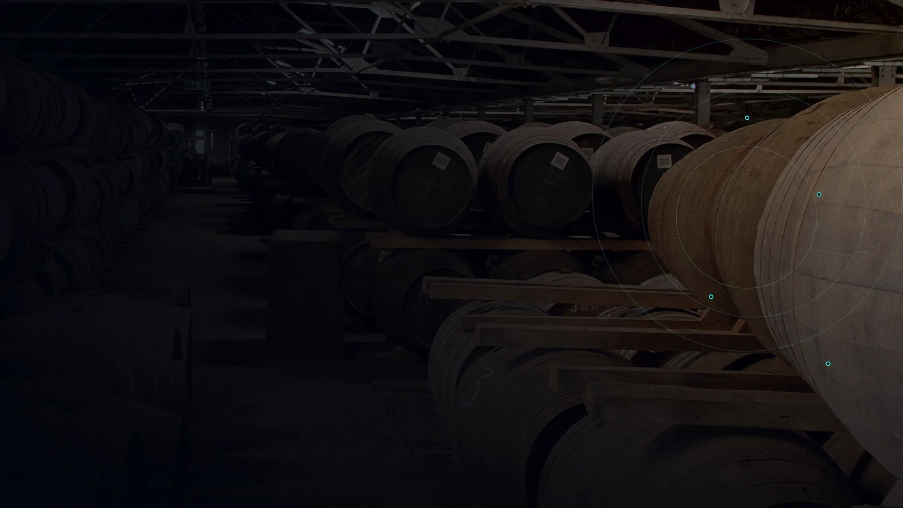
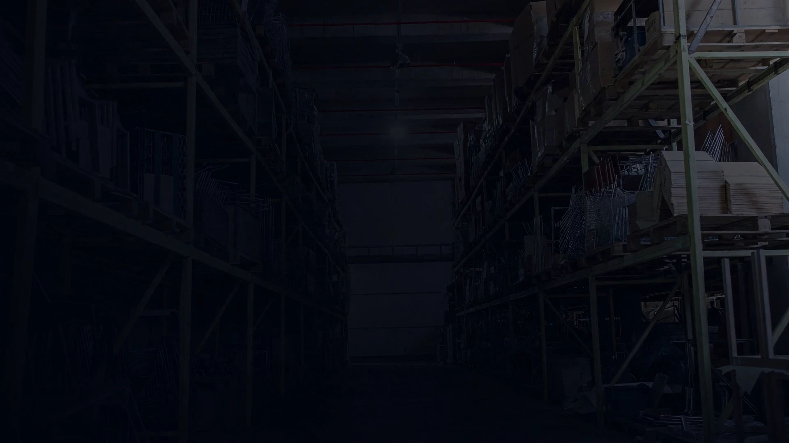
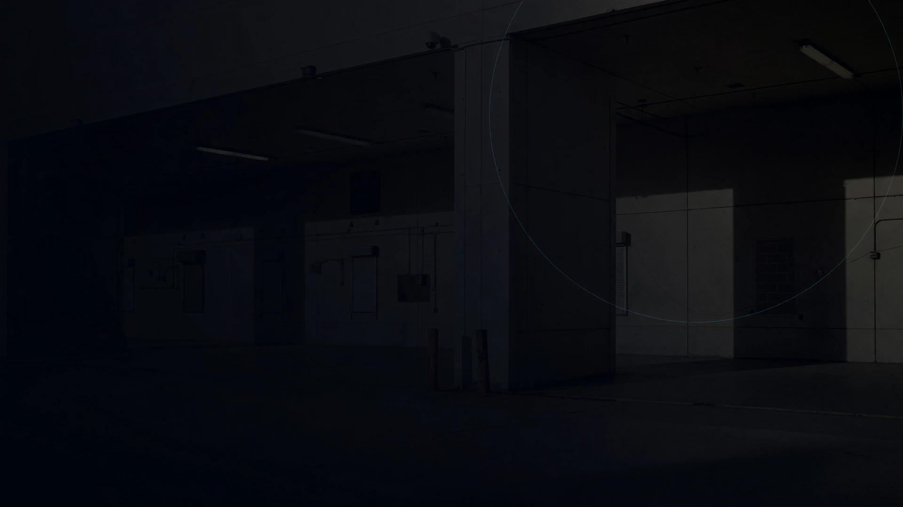
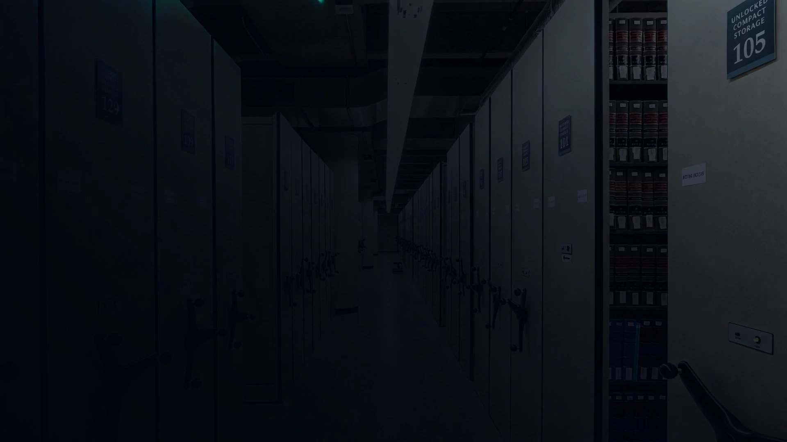

Prepared for Marussia Beverages. Every external figure in this briefing carries its source, its retrieval date and an evidence grade, so any claim here can be checked before you act on it.
We work with the systems and licences you already own. No new platform, no resale, nothing further to maintain.
An owner, a boundary, a metric and a stop rule before any use case starts.
One bounded proof against a measured baseline, then a decision. Not a programme.
Local activity without a common owner, control boundary or route to scale.
Disconnected data makes the baseline, the business case and realised return hard to prove.
New licences and integrations can arrive before value is proven and security and ownership are agreed.
The first question we would ask is not about AI. It is which enhancement pack your core ERP runs, because the answer decides whether this is a 2027 conversation or an already-overdue one.
This is our reading of what we have been told, not a record of anything you have approved. Please correct it in the meeting.
One practical rulebook and a shared operating model across the group.
Rank real use cases against a measurable baseline before recommending a pilot.
Inventory approved and unsanctioned tools, data exposure and training needs. Use existing licensed systems first.
A core ERP more than twenty years old and a reporting layer over a decade old, neither fully documented, with the working knowledge of both held by very few people. A migration of reporting into Power BI is already under way.
Undocumented process knowledge is the dependency under every other decision here, including the core-system decision. It is also the one that gets harder on a fixed timetable rather than a chosen one.
Capturing what those systems actually do is useful whichever core system you choose, and it is useful even if you never buy anything else from us.
Named outcome, baseline and success metric.
Approved sources, access, retention and least privilege.
Approval point, exception route and escalation owner.
Acceptance test, decision record and an explicit go or no-go.
Discovery produces the use-case register, the minimum control set, the responsibility matrix and the decision log. Before any pilot, data and credential custody, model-training restrictions, intellectual property, portability, deletion or return, and exit support are agreed in writing.

Retain formal approval for priorities, data, architecture, security, risk acceptance and every go or no-go decision.
Advise on architecture and security, provision approved access, and run production, change and incident management. We are not proposing to replace anyone.
Ranks use cases, designs controls, assembles evidence and hands over. We recommend no vendor and resell no licences.
We have been told there is an established IT partner relationship and that it works. The boundaries between group IT, local IT and any core-system contact are not ours to assume, so this is a set of roles to confirm rather than a finished responsibility matrix.
Capability you already own is the default. We resell nothing. Any new tool is a separate decision you take, with a reason written down.
A scheduled read-only extract to a reporting layer is an indirect static read under the published policy and is not itself a chargeable event. We would still have your licensing position confirmed in writing before anything is built.


Owns outcome definition, the economics of each use case and governance design. References and documentary evidence available during diligence.
Owns architecture, integrations, traceability and the controls that stop safely when a check fails.
Owns scope boundaries, the security interface, handover and stop rules.
Three people, and no bench behind them. You would be an early client of this firm, and we would rather you weighed that openly than discovered it later.
bffb83a, and a contribution to the Nimbalyst
project, commit 7155256 A, both
inspectable in public version control. Not claimed: named client references
for this firm. Roles, availability and a one-page responsibility matrix are
confirmed before appointment, not asserted here.Confirm the group objective, and whether Top Spirit is the first proof point.
An executive sponsor, a business owner and an IT and security counterpart.
One focused session to define the discovery proposal. No wider commitment.
Every external figure above carries a source, a retrieval date and a grade. Two are statute and can be read directly. We have deliberately printed no competitor case studies, because when we traced the widely quoted beverage-industry AI figures, most of them did not survive being checked. We would rather show you your own numbers than someone else's press release.
No lawful access to the data. No named owner. A baseline that cannot be measured. Or a cost out of proportion to the decision it informs. Any one of these ends the work at a price agreed before it starts, and you keep everything produced up to that point.